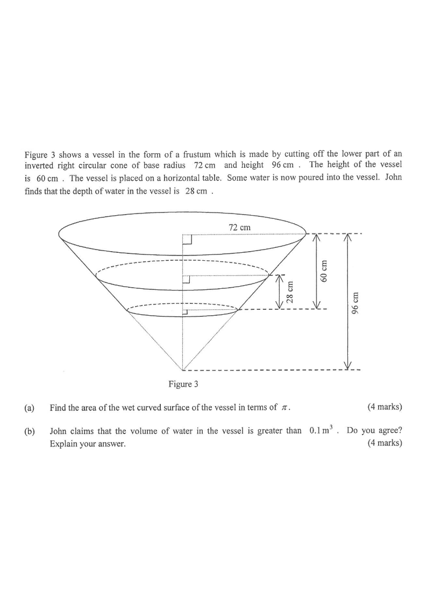

Drag the slider below to change the water depth (28 cm in the question).
Water depth: 28 cm
Question
Figure 3 shows a vessel in the form of a frustum which is made by cutting off the lower part of an inverted right circular cone of base radius 72 cm and height 96 cm. The height of the vessel is 60 cm. The vessel is placed on a horizontal table. Some water is now poured into the vessel. John finds the depth of the water in the vessel is 28 cm.
(a) Find the area of the wet curved surface of the vessel in terms of $\pi$. [4 marks]
(b) John claims that the volume of water in the vessel is greater than $0.1\text{ m}^3$. Do you agree? Explain your answer. [4 marks]

Figure (original exam diagram)
STEP-BY-STEP SOLUTION
Step 1 · Slant height of the big cone
Pythagoras Theorem\(l^{2}=r^{2}+h^{2}\)The slant height, the base radius \(72\) and the height \(96\) form a right-angled triangle.
Vertical height $=96$ cm, base radius $=72$ cm.
$$l=\sqrt{72^{2}+96^{2}}=\sqrt{5184+9216}=\sqrt{14400}=120\text{ cm}$$
Step 2 · Similar triangles → radii
Similar Triangles (corresponding lengths)\(\dfrac{r_{1}}{h_{1}}=\dfrac{r_{2}}{h_{2}}\)The removed cone is similar to the whole cone, so \(\dfrac{r}{h}=\dfrac{72}{96}=\dfrac{3}{4}\) for every height from the apex.
The whole cone and the removed cone are similar. Radius at height $h$ from the apex:
$$r=\frac{72}{96}\,h=\frac{3}{4}h$$
Top of vessel: $h=96\Rightarrow r=72$ cm.
Bottom of vessel: $h=96-60=36\Rightarrow r=27$ cm.
Step 3 · Water surface radius
Water depth $=28$ cm, so its apex height is
$$h_w=36+28=64\text{ cm}\quad\Rightarrow\quad r_w=\frac{3}{4}\times 64=48\text{ cm}$$
Radii relevant to the wet region: $r=27\to 48$, with $h=36\to 64$.
Step 4 · Wet curved surface area (Part a)
Curved Surface Area of a Frustum\(A=\pi\,(r_{1}+r_{2})\,s\)Here \(s=35\) with radii \(27\) and \(48\), giving \(2625\pi\text{ cm}^{2}\).
Lateral surface of a frustum with slant height $s$:
$$A=\pi\,s\,(r_{\text{top}}+r_{\text{bot}})$$
Similar triangles give the slant lengths:
$$s_{\text{big}}=\frac{5}{4}h\ \Rightarrow\ s_a=\tfrac{5}{4}(64)=80,\quad s_b=\tfrac{5}{4}(36)=45$$
So the wet curved surface (28 cm deep) has
$$s=80-45=35\text{ cm}$$
$$A=\pi(35)(48+27)=\pi(35)(75)=2625\pi\ \text{cm}^2$$
Volume of a Cone\(V=\dfrac{1}{3}\pi r^{2}h\)The water is the big cone of height \(64\) minus the similar cone of height \(36\), so subtract \(\dfrac{36^{3}}{96^{3}}\) of the whole volume.
Water occupies a cone of apex height $64$ cm minus the similar cone of apex height $36$ cm:
$$V_{\text{water}}=165\,888\pi\left(\frac{64^{3}-36^{3}}{96^{3}}\right)$$
$$=165\,888\pi\left(\frac{262\,144-46\,656}{884\,736}\right)=165\,888\pi\left(\frac{215\,488}{884\,736}\right)$$
$$=40\,404\pi\ \text{cm}^{3}\approx 0.12693\ \text{m}^{3}$$
(using $1\text{ m}^{3}=10^{6}\text{ cm}^{3}$.)
Step 7 · Conclusion
$$40\,404\pi\approx 126\,930\ \text{cm}^{3}=0.12693\ \text{m}^{3}>0.1\ \text{m}^{3}$$
So the claim is correct.
(a) Wet curved surface area $=2625\pi\ \text{cm}^{2}$ ·
(b) $V_{\text{water}}=40\,404\pi\ \text{cm}^{3}\approx 0.127\ \text{m}^{3}>0.1\ \text{m}^{3}$, so John's claim is agreed.
PRACTICESimilar question — try it yourself
Question. A vessel is in the form of a frustum made by cutting off the lower part of an inverted right circular cone of base radius \(48\text{ cm}\) and height \(64\text{ cm}\). The height of the vessel is \(40\text{ cm}\) and it stands on a horizontal table. Water is poured in until the depth is \(24\text{ cm}\). (a) Find the area of the wet curved surface of the vessel in terms of \(\pi\). [4 marks] (b) John claims that the volume of water is greater than \(0.05\text{ m}^{3}\). Do you agree? Explain. [4 marks]
Show the worked solution
Step 1. Slant height of the whole cone: \(l=\sqrt{48^{2}+64^{2}}=\sqrt{2304+4096}=80\text{ cm}\).
Step 2. Similar triangles give \(\dfrac{r}{h}=\dfrac{48}{64}=\dfrac{3}{4}\). The bottom of the vessel is at height \(64-40=24\), so \(r=18\); the water surface is at \(24+24=48\), so \(r_{w}=36\).
Step 3. Slant lengths from the apex: \(s=\dfrac{80}{64}h=\dfrac{5}{4}h\), so \(s_{w}=60\) and \(s_{b}=30\); the wet slant height is \(60-30=30\text{ cm}\).
Step 5. (b) Volume of the whole cone \(=\dfrac{1}{3}\pi(48)^{2}(64)=49\,152\pi\text{ cm}^{3}\).
Step 6. Water \(=49\,152\pi\left(\dfrac{48^{3}-24^{3}}{64^{3}}\right)=49\,152\pi\left(\dfrac{110\,592-13\,824}{262\,144}\right)=18\,144\pi\text{ cm}^{3}\).
Step 7. \(18\,144\pi\approx 57\,002\text{ cm}^{3}=0.0570\text{ m}^{3}>0.05\text{ m}^{3}\), so John\u2019s claim is agreed.
Key skills: (i) slant height from Pythagoras, (ii) similar triangles to get every radius $r=\frac{3}{4}h$ and slant $s=\frac{5}{4}h$, (iii) lateral area of a frustum $=\pi s(r_1+r_2)$, (iv) volume by difference of two similar cones (ratio of cubes of heights).